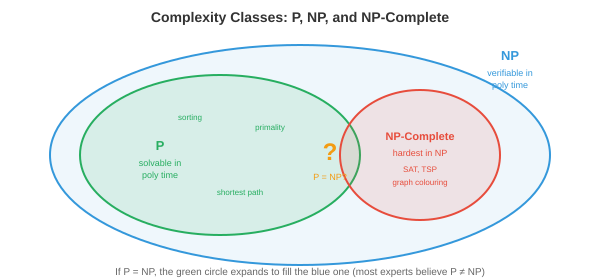

离散数学¶
离散数学是可数、分离结构的数学，是计算机科学的基础。本文涵盖命题逻辑与谓词逻辑、证明技术、集合、关系、函数、图论基础以及递推关系。
-
在前面的章节中，我们学习了连续数学：微积分（第 3 章）、概率分布（第 5 章）以及实值参数上的优化（第 6 章）。但计算机从根本上是离散机器。它们存储二进制位（0 或 1），处理整数，遵循分支逻辑，并在有限数据结构上运行。离散数学提供了推理这些结构的形式语言。
-
本章的所有内容都建立在离散数学之上：处理器的 logic gate 是布尔代数，调度算法需要正确性证明，内存管理使用集合运算，算法分析需要递推关系。
命题逻辑¶
-
命题逻辑是真/假陈述的代数。命题是一个要么为真（T）要么为假（F）的陈述，不可能同时为两者。"正在下雨"是一个命题。"现在几点了？"不是（它是一个问题，而非有真值的陈述）。
-
命题可以通过逻辑联结词组合：
- AND（合取，\(p \wedge q\)）：只有当 \(p\) 和 \(q\) 都为真时才为真。
- OR（析取，\(p \vee q\)）：\(p\) 或 \(q\) 中至少一个为真时为真。
- NOT（否定，\(\neg p\)）：翻转真值。
- IMPLIES（蕴含，\(p \to q\)）：只有当 \(p\) 为真而 \(q\) 为假时才为假。"如果下雨，地面就湿了"只有在下雨但地面不湿时才被违反。
- IFF（双条件，\(p \leftrightarrow q\)）：当两者具有相同真值时为真。
-
真值表穷举列出所有可能的输入组合及其对应输出。对于 \(n\) 个命题，该表有 \(2^n\) 行。这是验证逻辑等价的方式：
| \(p\) | \(q\) | \(p \wedge q\) | \(p \vee q\) | \(p \to q\) |
|---|---|---|---|---|
| T | T | T | T | T |
| T | F | F | T | F |
| F | T | F | T | T |
| F | F | F | F | T |
-
蕴含中 \(p\) 为假的行值得关注：\(F \to q\) 总是为真，无论 \(q\) 为何。这是空真（vacuous truth）。"如果猪会飞，那么我就是英格兰国王"在逻辑上为真，因为前提为假。这看似反直觉，但对数学推理至关重要。
-
逻辑等价是对所有真值都成立的恒等式：
-
德摩根定律：\(\neg(p \wedge q) \equiv \neg p \vee \neg q\) 以及 \(\neg(p \vee q) \equiv \neg p \wedge \neg q\)。对 AND 取反时，对每个部分取反并切换为 OR（反之亦然）。这在编程中直接体现：
!(a && b)等价于(!a || !b)。 -
逆否命题：\(p \to q \equiv \neg q \to \neg p\)。"如果下雨，地面就湿了"等价于"如果地面不湿，就没有下雨。"这是一种强有力的证明技术。
-
双重否定：\(\neg(\neg p) \equiv p\)。
-
分配律：\(p \wedge (q \vee r) \equiv (p \wedge q) \vee (p \wedge r)\)。
-
-
对所有真值赋值都为真的公式称为重言式（tautology）。总是为假的称为矛盾式（contradiction）。有时为真有时为假的称为偶然命题（contingent）。例如，\(p \vee \neg p\) 是重言式，\(p \wedge \neg p\) 是矛盾式。
谓词逻辑与量词¶
-
命题逻辑无法表达关于集合中所有或某些元素的陈述。"每个大于 2 的素数都是奇数"需要谓词逻辑，它通过变量、谓词和量词扩展了命题逻辑。
-
谓词是依赖于变量的陈述：\(P(x)\) = "\(x\) 是偶数"。当 \(x\) 取具体值时，它就成为命题：\(P(4)\) 为真，\(P(7)\) 为假。
-
量词表达范围：
- 全称量词（\(\forall\)）："对所有"。\(\forall x \, P(x)\) 意为"\(P(x)\) 对域中每个 \(x\) 都为真。"
- 存在量词（\(\exists\)）："存在"。\(\exists x \, P(x)\) 意为"至少存在一个 \(x\) 使 \(P(x)\) 为真。"
-
对量词取反会翻转它们：\(\neg(\forall x \, P(x)) \equiv \exists x \, \neg P(x)\)。"并非所有人都通过了"意味着"有人没通过。"以及 \(\neg(\exists x \, P(x)) \equiv \forall x \, \neg P(x)\)。"不存在完美的算法"意味着"每个算法都有缺陷。"
-
嵌套量词表达复杂关系。\(\forall x \, \exists y \, (y > x)\) 意为"对每个数，存在一个更大的数"（对整数为真）。顺序很重要：\(\exists y \, \forall x \, (y > x)\) 意为"存在一个大于所有数的数"（对整数为假）。
-
谓词逻辑是形式规范的语言。当我们说一个算法是"正确的"，我们的意思是 \(\forall \text{输入} \, x, \, \text{输出}(x) = \text{期望}(x)\)。当我们说它"终止"时，我们的意思是 \(\forall x \, \exists t \, \text{停机}(x, t)\)。
证明技术¶
-
证明是一个无可置疑地确立陈述真值的逻辑论证。与经验证据（只能说明某事对已测试情况有效）不同，证明保证了它对所有情况都有效。这是 CS 中正确性的标准。
-
直接证明：假设前提，通过逻辑步骤推导出结论。证明"如果 \(n\) 是偶数，那么 \(n^2\) 是偶数"：假设 \(n = 2k\)（\(k\) 为某整数），则 \(n^2 = 4k^2 = 2(2k^2)\)，是偶数。
-
反证法：假设命题为假并推导出矛盾。证明 \(\sqrt{2}\) 是无理数：假设 \(\sqrt{2} = a/b\)（最简分数）。则 \(2 = a^2/b^2\)，所以 \(a^2 = 2b^2\)，意味着 \(a^2\) 是偶数，因此 \(a\) 是偶数，设 \(a = 2c\)。则 \(4c^2 = 2b^2\)，所以 \(b^2 = 2c^2\)，意味着 \(b\) 也是偶数。但我们说 \(a/b\) 是最简分数——矛盾。
-
数学归纳法：通过证明以下两点来证明对所有自然数成立的命题：(1) 基础情况成立（通常是 \(n = 0\) 或 \(n = 1\)），(2) 归纳步骤：如果命题对 \(n = k\) 成立（归纳假设），则对 \(n = k + 1\) 也成立。
-
例如，证明 \(\sum_{i=1}^{n} i = \frac{n(n+1)}{2}\)：
- 基础情况：\(n = 1\)：\(1 = \frac{1 \cdot 2}{2} = 1\)。成立。
- 归纳步骤：假设 \(\sum_{i=1}^{k} i = \frac{k(k+1)}{2}\)。则 \(\sum_{i=1}^{k+1} i = \frac{k(k+1)}{2} + (k+1) = \frac{k(k+1) + 2(k+1)}{2} = \frac{(k+1)(k+2)}{2}\)。这是 \(n = k+1\) 时的公式。完毕。
-
归纳法是证明递归算法和数据结构性质的主要工具。每个递归算法都有一个隐式的正确性归纳证明：基础情况是终止条件，归纳步骤是递归调用。
-
强归纳法假设命题对所有小于等于 \(k\) 的值都成立（不仅仅是 \(k\)），然后证明 \(k + 1\) 的情况。当递归依赖于不止上一个值时很有用。
-
鸽巢原理：如果将 \(n+1\) 个对象放入 \(n\) 个盒子，至少有一个盒子包含两个对象。简单但出奇地强大。它证明了在任何 13 人的群体中，至少有两人同月出生。在网络中，它证明了当项目多于桶时，hash 碰撞是不可避免的。
集合¶
-
集合是无序的不同元素的集合。集合是数学中最基本的数据结构，它支撑着从类型系统到数据库查询的一切。
-
集合运算（连接到第 5 章中我们用于概率的这些内容）：
- 并集 \(A \cup B\)：属于 \(A\) 或 \(B\) 或两者的元素。
- 交集 \(A \cap B\)：同时属于 \(A\) 和 \(B\) 的元素。
- 补集 \(\bar{A}\)：不属于 \(A\) 的元素（相对于全集）。
- 差集 \(A \setminus B\)：属于 \(A\) 但不属于 \(B\) 的元素。
- 笛卡尔积 \(A \times B\)：所有有序对 \((a, b)\)，其中 \(a \in A, b \in B\)。
-
幂集 \(\mathcal{P}(A)\) 是 \(A\) 的所有子集的集合。如果 \(|A| = n\)，则 \(|\mathcal{P}(A)| = 2^n\)。对于 \(A = \{1, 2\}\)：\(\mathcal{P}(A) = \{\emptyset, \{1\}, \{2\}, \{1, 2\}\}\)。
-
基数衡量集合大小。有限集合有整数基数。无限集合有不同大小：自然数 \(\mathbb{N}\) 和有理数 \(\mathbb{Q}\) 是可数无限（可以列举），而实数 \(\mathbb{R}\) 是不可数无限（不能列举，由康托对角线论证证明）。这个区别在可计算性理论中很重要：函数有不可数个，但程序只有可数个，所以大多数函数是不可计算的。
关系¶
-
集合 \(A\) 上的关系 \(R\) 是 \(A \times A\) 的子集：一组指定哪些元素相关的有序对。例如，整数上的 \(\leq\) 是集合 \(\{(a, b) : a \leq b\}\)。
-
关系的重要性质：
- 自反性：每个元素都与自身相关。对所有 \(a\)，\(a R a\)。例子：\(\leq\)（每个数 \(\leq\) 自身）。
- 对称性：如果 \(a R b\) 则 \(b R a\)。例子："是兄弟姐妹"。
- 反对称性：如果 \(a R b\) 且 \(b R a\) 则 \(a = b\)。例子：\(\leq\)。
- 传递性：如果 \(a R b\) 且 \(b R c\) 则 \(a R c\)。例子：\(<\)、\(\leq\)、"是祖先"。
-
等价关系是自反、对称且传递的。它将集合划分为等价类，类中的所有元素彼此相关，但与其他类中的元素不相关。模运算是等价关系：\(a \equiv b \pmod{n}\) 将整数划分为 \(n\) 个类。编程语言中的类型等价是等价关系。
-
偏序是自反、反对称且传递的。它定义了一种"小于等于"结构，其中某些元素可能无法比较。文件系统目录形成偏序（父子关系），但兄弟目录无法比较。全序是偏序，其中每对元素都可比较（如整数上的 \(\leq\)）。
-
偏序在并发中至关重要："发生在之前"（happens-before）关系是事件上的偏序。不被 happens-before 排序的事件是并发的，可以以任何相对顺序执行。
函数¶
-
函数 \(f: A \to B\) 将 \(A\)（定义域）的每个元素映射到 \(B\)（值域）的恰好一个元素。函数是确定性计算的数学模型：给定一个输入，恰好有一个输出。
-
单射（一对一）：不同输入总是给出不同输出。\(f(a) = f(b) \implies a = b\)。无损压缩是单射的：不同输入必须压缩为不同输出（否则无法唯一解压）。
-
满射（到）：\(B\) 的每个元素都被 \(A\) 的某个元素映射到。值域等于陪域。将字符串映射到 256 位哈希的 hash 函数，如果字符串少于可能的 hash 值，则不是满射的。
-
双射：既是单射又是满射。\(A\) 和 \(B\) 之间的完美一一对应。双射有逆映射。加密必须是双射的：每个明文映射到唯一密文，解密函数是其逆映射。
-
复合 \((g \circ f)(x) = g(f(x))\)：先应用 \(f\)，再应用 \(g\)。函数复合是结合的（第 2 章：与矩阵乘法结合律相同）。软件中的 pipeline 是函数复合：数据流经一系列变换。
图论基础¶
-
我们在第 12 章（图神经网络）中广泛覆盖了图，包括邻接矩阵、图类型、拉普拉斯矩阵和谱理论。这里我们关注与 CS 相关的算法和结构性质。
-
树是无环连通图。等价地，它有 \(n\) 个节点和 \(n-1\) 条边。树是文件系统、XML/HTML 文档、决策过程和递归分解的结构。有根树有一个指定的根节点；每个其他节点恰好有一个父节点。
-
图 \(G\) 的生成树是使用 \(G\) 的边的子集包含 \(G\) 所有节点的树。最小生成树（MST）最小化总边权。Kruskal 算法（排序边，贪心添加不形成环的最轻边）和 Prim 算法（从起始节点生长树，总是向新节点添加最轻边）都在 \(O(|E| \log |V|)\) 时间内找到 MST。
-
平面性：如果图可以在平面上绘制而不交叉任何边，则它是平面图。根据欧拉公式，对于连通平面图：\(|V| - |E| + |F| = 2\)，其中 \(|F|\) 是面（区域，包括外面）的数量。这意味着对于平面图 \(|E| \leq 3|V| - 6\)，因此平面图是稀疏的。电路板布线和地图着色利用了平面性。
-
图着色为节点分配颜色，使相邻节点没有相同颜色。所需的最少颜色数是色数 \(\chi(G)\)。四色定理指出对任何平面图 \(\chi(G) \leq 4\)。在 CS 中，图着色为寄存器分配建模（将变量分配给 CPU register，使同时存活的变量获得不同 register）和调度（将任务分配给时间槽，使冲突任务不重叠）。
-
欧拉路径恰好访问每条边一次。当且仅当图中恰好有 0 或 2 个奇度节点时存在。哈密顿路径恰好访问每个节点一次。判断哈密顿路径是否存在是 NP 完全问题——CS 中的经典难问题之一。这种对比（欧拉：多项式，哈密顿：NP 完全）说明了听起来相似的问题在计算复杂度上可以有多大不同。
递推关系¶
-
递推关系定义了每一项依赖于前几项的序列。它们自然地出现在递归算法中。
-
最简单的例子：\(T(n) = T(n-1) + 1\)，\(T(0) = 0\)。展开：\(T(n) = T(n-1) + 1 = T(n-2) + 2 = \cdots = n\)。这是 \(O(n)\)，简单循环的时间复杂度。
-
归并排序给出 \(T(n) = 2T(n/2) + O(n)\)：将数组分成两半（两个大小为 \(n/2\) 的子问题），递归排序每一半，然后合并（\(O(n)\) 工作）。解为 \(T(n) = O(n \log n)\)。
-
主定理解决形如 \(T(n) = aT(n/b) + O(n^d)\) 的递推关系：
- 如果 \(d > \log_b a\)：\(T(n) = O(n^d)\)（每层的工作占主导）
- 如果 \(d = \log_b a\)：\(T(n) = O(n^d \log n)\)（工作在各层间均衡分布）
- 如果 \(d < \log_b a\)：\(T(n) = O(n^{\log_b a})\)（子问题数量占主导）
-
对于归并排序：\(a = 2, b = 2, d = 1\)。由于 \(d = \log_2 2 = 1\)，我们处于均衡情况：\(T(n) = O(n \log n)\)。
-
Fibonacci 递推 \(F(n) = F(n-1) + F(n-2)\)，\(F(0) = 0, F(1) = 1\)，有闭合解 \(F(n) = \frac{\phi^n - \psi^n}{\sqrt{5}}\)，其中 \(\phi = \frac{1+\sqrt{5}}{2}\)（黄金比例）和 \(\psi = \frac{1-\sqrt{5}}{2}\)。这表明 Fibonacci 序列按 \(O(\phi^n)\) 指数增长，这就是朴素递归 Fibonacci 指数慢的原因。
-
组合数学（排列、组合、二项式定理和容斥原理）在第 5 章（概率）中有所涉及。这些计数技术对于算法分析（有多少可能的输入？有多少次比较？）是必不可少的，但我们在这里不再重复。
可计算性¶
-
并非所有事物都可以计算。这是数学中最深刻的结果之一，它设定了计算机能做什么的基本限制。
-
图灵机是一个抽象计算模型：一个无限的符号单元带（每个单元格持有一个符号），一个读/写头，以及一组有限状态和转换规则。尽管简单，图灵机可以计算任何真实计算机能计算的东西。这就是丘奇-图灵论题：任何有效可计算的函数都可以由图灵机计算。
-
每种编程语言（Python、C、Haskell）都是图灵完备的：它可以模拟图灵机，因此可以计算任何可计算的东西。语言之间的差异在于便利性、速度和安全性，而不是它们从根本上可以计算什么。
-
停机问题询问：给定一个程序和输入，程序最终会停止还是永远运行？图灵（1936）证明了没有算法能在一般情况下解决这个问题。证明是反证法：假设停机检测器 \(H(P, x)\) 存在。构造一个程序 \(D\)，它运行 \(H(D, D)\) 并做与 \(H\) 所说相反的事情。如果 \(H\) 说 \(D\) 停机，\(D\) 就永远循环。如果 \(H\) 说 \(D\) 循环，\(D\) 就停机。矛盾。
-
这不是当前技术的局限；这是数学上的不可能。无论多少计算、多少聪明才智或 AI 都无法在一般情况下解决停机问题。这是计算机科学中哥德尔不完全性定理的类比。
-
实际后果：你无法编写一个完美的 deadlock 检测器、完美的病毒扫描器或完美的优化编译器。这些都需要在一般情况下解决停机问题（或等价的不可判定问题）。真实工具使用启发式方法和近似，在常见情况下有效，但不能保证对所有输入的正确性。
-
如果一个算法总是以正确的是/否答案终止，则问题是可判定的。如果不存在这样的算法，则是不可判定的。停机问题是不可判定的。素性测试是可判定的。大多数编程语言中的类型检查（按设计）是可判定的。
复杂度理论¶
- 即使在可计算问题中，有些也比其他的难得多。复杂度理论根据解决问题所需的资源（时间、空间）随输入增长来对问题进行分类。

-
P（多项式时间）：可在 \(O(n^k)\) 时间内解决的问题（\(k\) 为某常数）。排序（\(O(n \log n)\)）、最短路径（\(O(|V|^2)\)）、矩阵乘法（\(O(n^3)\)）。这些被认为是"高效"或"易处理的"。
-
NP（非确定性多项式时间）：即使找到解可能需要指数时间，也可以在多项式时间内验证所提出的解的问题。例如，给定一条声称的哈密顿路径，你可以通过检查每条边在 \(O(n)\) 内验证它。但找到一条路径可能需要尝试指数多的可能性。
-
P 中的每个问题也在 NP 中（如果你能快速解决它，你当然可以快速验证解）。核心问题是 \(P = NP\)？：每个可以快速验证解的问题也可以快速求解吗？这是计算机科学中最重要的开放问题，有 100 万美元的 Clay 千禧奖。
-
大多数专家认为 \(P \neq NP\)，意味着某些问题从根本上比验证更难解决。如果 \(P = NP\)，密码学将崩溃（破解加密在 NP 中），优化、调度和药物设计将变得非常容易。
-
NP 完全问题是 NP 中最难的问题。如果：(1) 它在 NP 中，(2) 所有其他 NP 问题都可以在多项式时间内归约到它，则问题是 NP 完全的。如果你能高效地解决任何 NP 完全问题，你就能解决所有问题（\(P = NP\)）。
-
归约将一个问题转化为另一个问题。如果问题 A 归约到问题 B，则 B 至少和 A 一样难。Cook（1971）证明了 SAT（布尔可满足性：给定一个逻辑公式，是否存在使其为真的变量赋值？）是 NP 完全的。Karp（1972）通过将 SAT 归约到每一个问题，证明了另外 21 个经典问题是 NP 完全的。
-
著名的 NP 完全问题：
- 旅行商问题（TSP）：找到恰好访问所有城市一次的最短路线。
- 图着色：用 \(k\) 种颜色（\(k \geq 3\)）给节点着色，使相邻节点没有相同颜色。
- 子集和：给定一组整数，是否有一个子集的和等于目标值？
- 布尔可满足性（SAT）：是否有一个真值赋值满足逻辑公式？
- 哈密顿路径（上面图论中提到的）。
-
当你在实践中遇到 NP 完全问题时，你不会对大输入精确求解。相反，你使用：近似算法（找到保证在最优解某个因子内的解）、启发式方法（贪心、局部搜索、模拟退火），或特殊情况求解器（许多 NP 完全问题对于受限输入是容易的）。现代 SAT 求解器，例如，尽管最坏情况下具有指数复杂度，但通过利用实际实例中的结构，经常求解具有数百万变量的实例。
-
NP 难问题至少和 NP 完全一样难，但可能不在 NP 中（其解甚至可能无法在多项式时间内验证）。NP 完全问题的优化版本通常是 NP 难的："找到最短的 TSP 路线"是 NP 难的，而"是否有长度小于 \(k\) 的 TSP 路线？"是 NP 完全的。
编程任务（使用 CoLab 或 notebook）¶
-
构建一个真值表生成器。给定一个逻辑表达式，枚举所有输入组合并计算输出。
import itertools def truth_table(n_vars, expr_fn): """为 n_vars 个变量的布尔函数生成真值表。""" headers = [f"p{i}" for i in range(n_vars)] print(" | ".join(headers + ["result"])) print("-" * (len(headers) * 4 + 10)) for vals in itertools.product([False, True], repeat=n_vars): result = expr_fn(*vals) row = [str(v)[0] for v in vals] + [str(result)[0]] print(" | ".join(f"{r:>2}" for r in row)) # 德摩根定律：NOT(p AND q) == (NOT p) OR (NOT q) print("德摩根定律验证：") truth_table(2, lambda p, q: (not (p and q)) == ((not p) or (not q))) -
用归纳法证明求和公式——对多个值进行数值验证，然后实现闭合解。
-
用主定理求解归并排序递推关系，并通过计算操作次数进行经验验证。
import jax.numpy as jnp def merge_sort_ops(n): """计算归并排序中的比较次数（递推关系：T(n) = 2T(n/2) + n）。""" if n <= 1: return 0 half = n // 2 return merge_sort_ops(half) + merge_sort_ops(n - half) + n for n in [8, 64, 512, 4096, 32768]: ops = merge_sort_ops(n) predicted = n * jnp.log2(n) ratio = ops / predicted print(f"n={n:5d} ops={ops:>10d} n log n={int(predicted):>10d} ratio={ratio:.3f}")